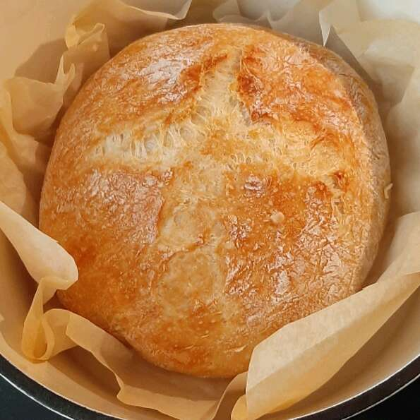

No-Knead Artisan Style Bread

Description
This is a very easy bread to make without any kneading. Bake in a Dutch oven or heavy casserole dish. The bread comes out very crusty and with huge holes throughout, just like at the bakery.
Ingredients
- 3 cups all-purpose flour
- 1 teaspoon active dry yeast
- 2 teaspoons salt
- 1 ⅔ cups warm water (45 degrees C)
- 1 teaspoon chopped fresh rosemary (Oprional)
- 1 teaspoon chopped fresh thyme (Optional)
- 1 teaspoon chopped fresh sage (Optional)
Steps
- Combine the flour, yeast, and salt in a large bowl and mix to combine. Add the water and herbs, if using, and mix well. Cover the bowl with plastic wrap and set aside at room temperature for 18 to 24 hours.
- Generously flour a work surface. Transfer the dough to the work surface and dust it with flour. Fold the dough in half, and then form the dough into a ball by stretching and tucking the edges of the dough underneath the ball.
- Liberally flour a kitchen towel (do not use terrycloth). Place the dough ball on the floured towel. Cover with another floured towel. Let the dough rise for about two hours.
- Preheat an oven to 450 degrees F (230 degrees C). Place a lidded Dutch oven or deep heavy duty casserole dish (with lid) into the oven to preheat.
- Carefully remove the hot baking dish from the oven. Remove the lid and gently turn the dough ball into the ungreased baking dish, seam-side up; shake the dish so the dough is more evenly distributed.
- Cover and bake for 30 minutes. Remove the lid and bake until the crust is golden brown, 15 to 20 minutes. Remove the loaf from the baking dish and let it cool on a rack before slicing.
Image and recipe borrowed from allrecipes.com.